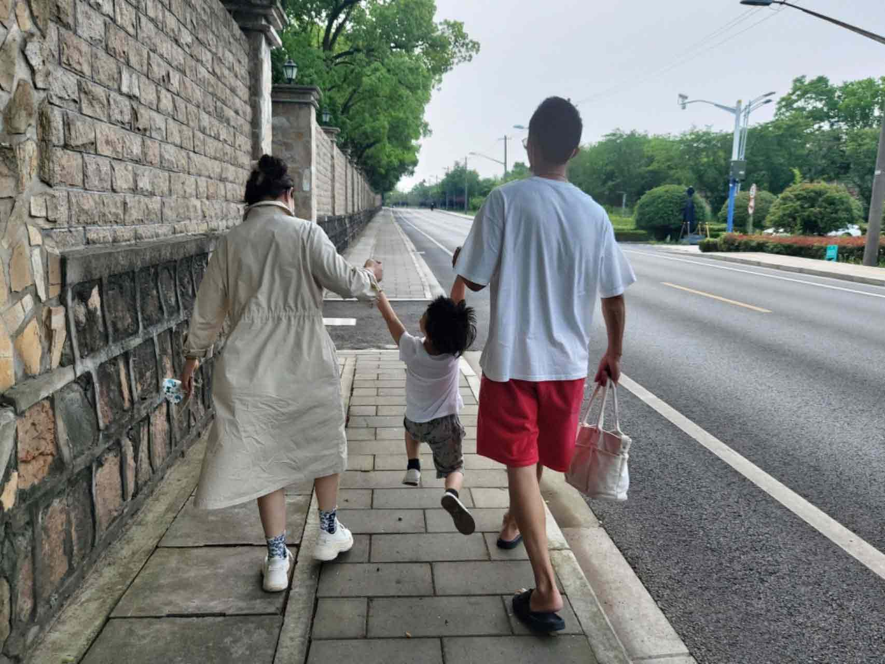
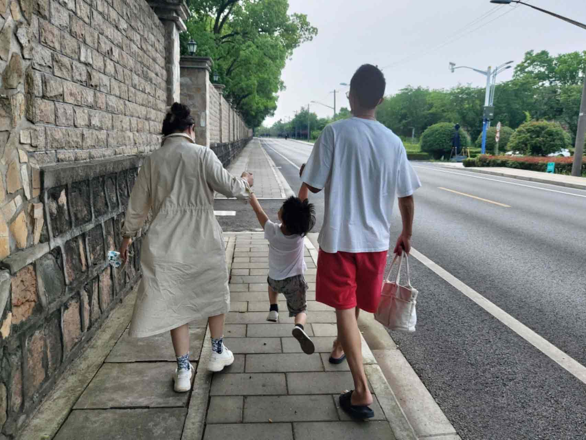
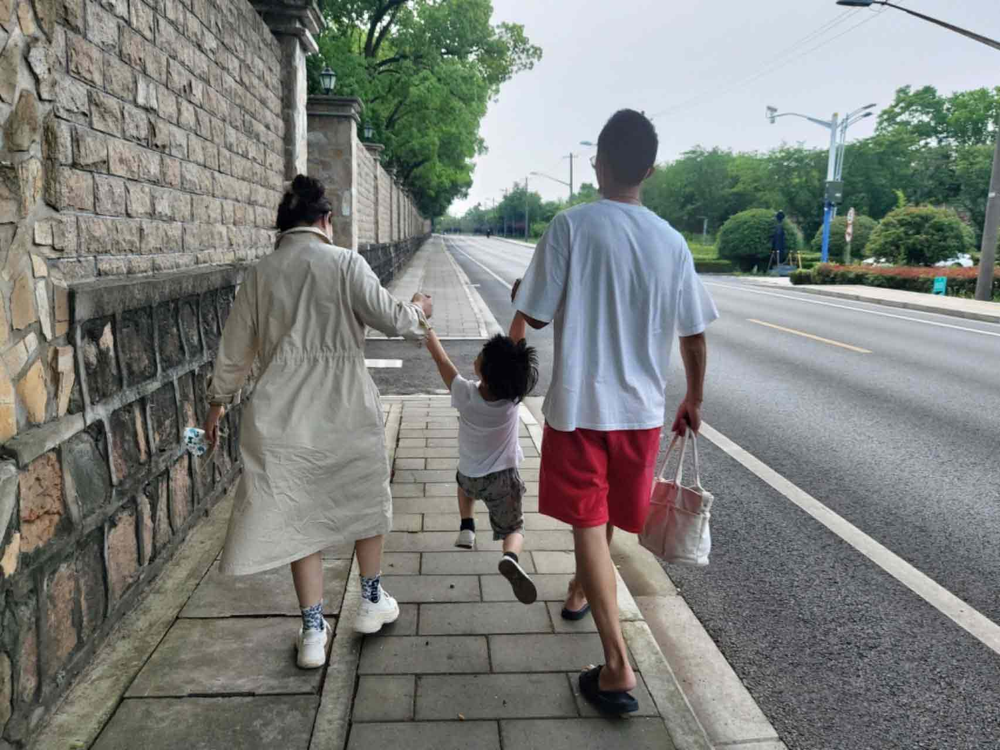
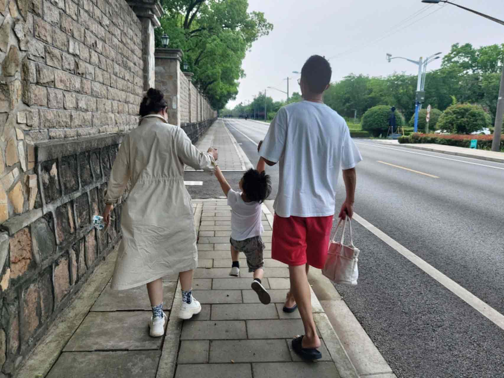

今天是6月28日，是你的生日，1977年的这一天，世界上最好的郭萍出生了，到现在的2024年，你仍像年轻时的模样，却多了几分因为操心家庭而挂在脸上的沧桑，这些年，你为了家庭，付出了太多太多， 儿子老公身上的新衣服是你的功劳，家里永远不用担心吃饭的问题也是你的功劳，家里永远不留一抹灰尘也是你的功劳，甚至自己已经病倒了，也依然坚持为家里做饭。除此之外还有千千万万件事情， 你默默地付出了，却不求回报，只为这个家变得更好，只为儿子和老公能专心去工作赚钱和学习，而不用考虑后勤问题。希望，新的一年里，你能多关心一下自己，这是来自儿子和老公共同的愿望，我们都希望你能轻松一点，少操劳一点。 希望快乐常伴你左右，也祝你越来越健康。生日快乐。
 


